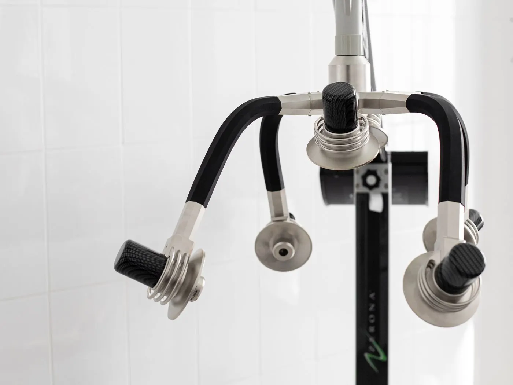
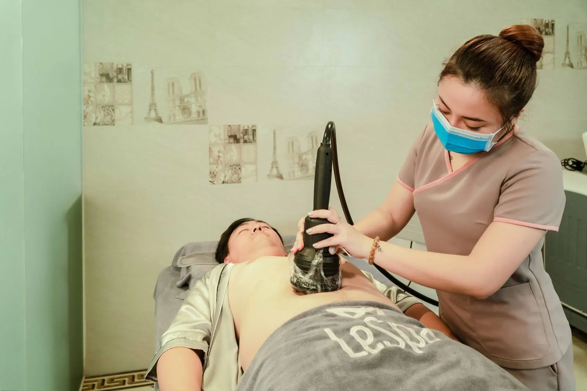
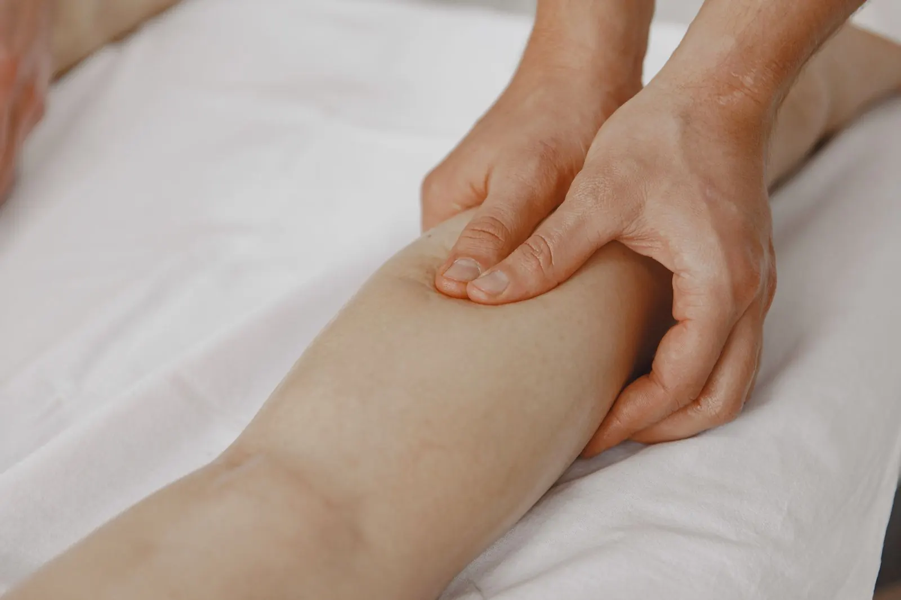

Contorno
Criolipólise
Resfriamento controlado de uma área de gordura localizada, como abdômen e flancos.
Início / Tratamentos
8 tratamentos corporais
Cada tratamento com objetivo, como funciona, para quem é e quando não é recomendado. Filtre pelo que você procura.

8 tratamentos
Contorno
Resfriamento controlado de uma área de gordura localizada, como abdômen e flancos.

Contorno
Ondas de ultrassom na área de gordura localizada, seguidas de drenagem ou pressoterapia.

Firmeza
Aquecimento controlado da pele para estimular colágeno em áreas com flacidez.

Firmeza
Contrações musculares por corrente elétrica, como complemento ao exercício.

Inchaço · Pós-operatório
Massagem de pressão leve que acompanha o caminho da linfa, para inchaço e pós-operatório.

Inchaço
Botas e cinta com câmaras de ar que fazem compressão em sequência, dos pés para cima.

Pós-operatório
Plano para depois de cirurgias plásticas, com drenagem, laser de baixa potência e reavaliação.

Pós-operatório · Inchaço
Luz de baixa potência, sem calor, usada como apoio na recuperação e em áreas sensíveis.
Não sabe qual escolher? Monte sua jornada em 5 passos.